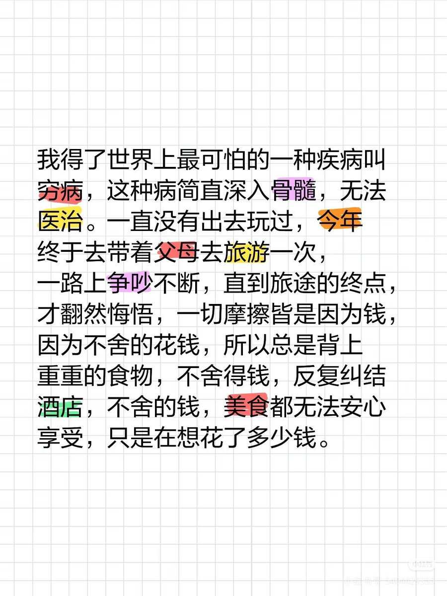

与其五万块买个闷闷不乐的旅行，倒不如直接关起来，说是教育也好，说是报复也好，眼不见心不烦了，也可以自我感动了


tmd，有这五万块钱,你带孩子出去旅游，哪怕不出国，在国内也玩得很舒服
换个好心情，旅游期间增进交流，能缓和你们所谓的「叛逆」
想起当年我为了看到外面世界辛苦打工攒下一万块，这种家长豪掷五万块训狗，爆出来脏口，请大家见谅 https://t.co/ANNtbc536l https://t.co/55wJZQ6nC9
换个好心情，旅游期间增进交流，能缓和你们所谓的「叛逆」
想起当年我为了看到外面世界辛苦打工攒下一万块，这种家长豪掷五万块训狗，爆出来脏口，请大家见谅 https://t.co/ANNtbc536l https://t.co/55wJZQ6nC9